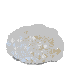

| Emoji | Expected Usage Level | Image distinctiveness | Completeness | Overly specific | Open-ended | Already Representable | Transient |
|---|
| Frequency | Multiple usages |
|---|
| Smileys & People: person |
|---|
| dwarf | 673,000 | Germanic fantastic being, small variety or form | | literature, portrait, roleplay, cosplay: complement to creature-face, person, and person-role | no: male genus, variety, or form specimen | no: most-popular representative of small crafty earthdweller equivalent to Hellènic pygmy and its New Latin gloss gnome | no: no proportion, stature, or beard emoji or modifiers | no: historic and modern |
| dwarfess | 234,000 | Germanic fantastic being, metamýth | | literature, portrait, roleplay, cosplay: complement to creature-face, person, and person-role | no: female genus, variety, or form specimen | no: controversial form of small crafty earthdweller | no: no proportion or stature emoji or modifiers | no: historic and modern |
| elf | 12,500,000 | Germanic fantastic being | | literature, portrait, roleplay, cosplay: complement to face-role, creature-face, person, person-role, and skin-tone | no: male genus specimen | no: most-popular lemma representative of ambivalent otherworldly being equivalent to the Arabic dzhinn and Celtic sith, where Latin fata or Romance fay was a nonnative gloss | no: no stature or white Fitzpatrick modifier | no: historic and modern |
| elfe | 530,000 | Germanic fantastic being, lightning (elve) | | literature, portrait, roleplay, cosplay: complement to face-role, creature-face, person, person-role, and skin-tone | no: female genus specimen | no: most popular representative of ambivalent otherworldly being | no: no stature or white Fitzpatrick modifier | no: historic and modern |
| fairy | 1,400,000 | British fantastic being, charm, effeminate uranian | | literature, portrait, roleplay, cosplay: complement to face-role, person, person-role, and emotion | no: usually-female genus specimen | no: popular modern fusion of winged Celtic sith and Germanic elf | no: The only winged person emoji of baby angel represents a baby's special heavenly origin rather than a means of locomotion, and the halo betokens a good alignment. | no: historic and modern |
| genius | 792,000 | Italic fantastic being, creative intellect | | literature, portrait, roleplay, cosplay: complement to face-role, person, person-role, and emotion | no: usually-male genus specimen | no: common ancient motif of often-winged guardian, still more popular than the equivalent Iranian amesha spenta and Semitic rav malakh | maybe: man + ghost or baby angel | no: historic |
| giant | 1,120,000 | fantastic being, legendary being, great variety or form | | literature, portrait, roleplay, cosplay: complement to creature-face, person, and person-role | no: male genus, variety, or form specimen | no: common motif of great-to-towerlike person | no: no proportion, stature, or clothes modifiers | no: historic and modern |
| giantess | 728,000 | fantastic being, legendary being, great variety or form | | literature, portrait, roleplay, cosplay: complement to creature-face, person, and person-role | no: female genus, variety, or form specimen | no: common motif of great-to-towerlike person | no: no proportion, stature, or clothes modifiers | no: historic and modern |
| mermaid | 545,000 | fantastic being | | literature, portrait, roleplay, cosplay: complement to creature-face, person, and animal-marine | no: female genus specimen | no: popular kimæra | maybe: woman + fish | no: historic and modern |
| merman | 434,000 | fantastic being | | literature, portrait, roleplay, cosplay: complement to creature-face, person, and animal-marine | no: male genus specimen | no: popular kimæra | maybe: man + fish | no: historic and modern |
| nymph | 505,000 | Hellènic fantastic being, insect hatchling, miss/mistress | | literature, portrait, roleplay, cosplay: complement to person, person-role, and person-activity | no: female genus or role specimen | no: popular cultural borrowing | maybe: woman dancing, woman dancing + fountain, woman + ghost, or bride with veil | no: historic and modern |
| troll | 2,030,000 | Germanic fantastic being, deformity, deceptive baiter | | literature, portrait, roleplay, cosplay: complement to face-role, creature-face, person, and person-activity | no: genus, variety, form, or role specimen | no: popular transferred motif | no | no: historic and modern, historic certainly the sudden late-onset vascular disorder Proteus syndrome |
| vampire | 889,000 | Slavic fantastic being, bloodsucker, parasite | | literature, portrait, roleplay, cosplay: complement to creature-face, person, person-activity, skin-tone, emotion, clothing, animal-mammal, and other-object | no: male genus or role specimen | no: popular cultural borrowing and transferred motif | maybe: man + bat | no: historic and modern |
| vampiress | 364,000 | Slavic fantastic being, seductress (vamp) | | literature, portrait, roleplay, cosplay: complement to creature-face, person, person-activity, skin-tone, emotion, clothing, animal-mammal, and other-object | no: female genus or role specimen | no: popular transferred motif | maybe: woman + bat | no: historic and modern |
| werewolf | 634,000 | Central European fantastic being, curse victim | | literature, portrait, roleplay, cosplay: complement to person, person-activity, skin-tone, animal-mammal, and other-object | maybe: male genus or form specimen, instead of wolfman | no: most-popular kimæra | maybe: man + wolf face | no: historic and modern |
| zombie | 1,350,000 | Bantu fantastic being, curse victim, undead predator | | literature, portrait, roleplay, cosplay: complement to face-role, face-sick, creature-face, person, person-role, person-gesture, skin tone, and emotion | no: form or role specimen | no: popular transferred motif | no | no: historic and modern |
| Smileys & People: creature-face |
|---|
| Bigfoot | 447,000 | North American legendary bipedal ape, Gigantopithecus | | folklore: complemeent to creature-face, person, animal-mammal, and place-geographic | no: family specimen | no: most-popular American strange hominid | maybe: man + gorilla | no: historic and modern |
| Chupacabras | 197,000 | American legendary bipedal reptile or canid | | folklore: complement to creature-face, person, and animal | no: genus or species specimen | no: broad news coverage | no | no: historic and modern |
| Nessie | 360,000 | Scottish legendary dinosaur, driftwood, sea serpent | | folklore: complement to creature-face, person, animal-reptile, and place-geographic | no: family specimen | no: popular witnessing and tourist trap | no | no: historic and modern |
| Yeti | 476,000 | HImalayan legendary bipedal ape, bipedal bear | | folklore: complement to creature-face, person, animal-mammal, and place-geographic | no: family specimen | no: most-popular Asian strange hominid | maybe: bear face + snowman | no: historic and modern |
| Animals & Nature: animal-bird |
|---|
| crane | 12,300,000 | tall slender bird, Eurasian mascot, heavy lifter | | birds: complement to person-activity and animal-bird | no: family specimen | no: popular worldwide | no | no: historic and modern |
| hummingbird | 638,000 | American smallest bird, best bird hoverer | | birds: complement to person-activity and animal-bird | no: family specimen | no: extreme bird | no | no: historic and modern |
| parrot | 746,000 | colorful pantropical bird, repeat | | birds: complement to face-role, person-activity, and animal-bird | no: order specimen | no: popular worldwide | no | no: historic and modern |
| Animals & Nature: animal-marine |
|---|
| coral | 42,000,000 | colonial sea invertebrate, limestone reef | | sea: complement to animal-marine and place-geographic | no: class specimen | no: popular worldwide | no | no: historic and modern |
| Animals & Nature: animal-bug |
|---|
| fly | 82,100,000 | two-winged insect, fishing lure, crotch strip | | vermin: complement to face-sick and animal-bug | no: order specimen | no: popular worldwide | no | no: historic and modern |
| Animals & Nature: plant-other |
|---|
| grass | 76,100,000 | stem-bladed plant, lawn, hemp | | leaves, places: complement to person-sport, plant-other, and place-geographic | no: order specimen | no: popular worldwide | no, other than seedling and sheaf of rice | no: historic and modern |
| moss | 23,500,000 | spongy simple plant, algal fungus | | leaves, places: complement to plant-other and place-geographic | no: division specimen | no: popular worldwide | no | no: historic and modern |
| nest | 6,900,000 | bird's lair, settlement, container | | trees, places: complement to animal-bird and plant-other | no: belonging of the bird class | no: popular worldwide | no | no: historic and modern |
| seaweed | 25,700,000 | sea plant, food, food wrapper | | plants, sea: complement to plant-other, food-asian, and place-geographic | no: group of species specimen | no: popular worldwide | no | no: historic and modern |
| Food & Drink: food-prepared |
|---|
| butter | 188,000,000 | milk smear, smear, flatter, obtruder | | prepared food: complement to face-positive and food | no: group of spreads specimen | no: generic name for a food spread | no | no: historic and modern |
| ice cube | 10,600,000 | frozen drink, drink cooler | | drink: complement to face-negative, face-sick, food, drink, place-geographic, and sky & weather | maybe: important nonetheless | no: popular commodity | no | no: historic and modern |
| pepper | 8,530,000 | ground spice, sprinkle, sneezing powder |  | prepared food: complement to face-negative, face-sick, and food | no: group of spices specimen | no: popular condiment | no | no: historic and modern |
| salt | 16,100,000 | flavor enhancer, lust, upset, encryption padding | | prepared food: complement to emotion and food | no: family of minerals specimen | no: popular condiment | no | no: historic and modern |
| snack bag | 61,700,000 | convenience food, special (all that and a bag of chips) | | prepared food: complement to food and event | no: group of produce specimen | no: popular food packaging | no | no: historic and modern |
| Food & Drink: food-sweet |
|---|
| sugar | 32,300,000 | sweetener, sweetness, flattery | | prepared food: complement to emotion, food, and drink | no: group of minerals specimen | no: popular condiment | no | no: historic and modern |
| Travel & Places: place-map |
|---|
| compass rose | 430,000 | marks | | abstract: complement to place-map, place-geographic, and arrow | no: singular use | no: accessory to a map | no | no: historic and modern |
| Travel & Places: place-geographic |
|---|
| cave | 38,300,000 | earthhole, hollow, collapse, surrender | | places: complement to creature-face, person, animal, and place-geographic | no: kind of landform specimen | no: common landform | no | no: historic and modern |
| Travel & Places: place-building |
|---|
| lighthouse | 26,300,000 | beacon, control tower | | buildings: complement to place-geographic, place-other, and transport-water | no: kind of building specimen | no: accessory to a ship | maybe: light bulb or flashlight + house | no: historic and modern |
| log cabin | 19,400,000 | simple building, queer activism | | buildings: complement to person-role, family, place-geographic, and place-other | maybe: variety of building specimen | maybe: one of many kinds of houses | no | no: historic and modern |
| ruin | 79,800,000 | torn building, defeat | | buildings: complement to place, sky & weather, and warning | no: group of buildings specimen | no: common end of buildings | maybe: classical building + collision | no: historic and modern |
| Travel & Places: place-religious |
|---|
| pyramid | 5,550,000 | tomb monument, sham investment | | buildings: complment to place-geographic, place-building, and place-religious | maybe: variety of monument specimen | maybe: one of many kinds of monuments | no | no: historic and modern |
| Travel & Places: place-other |
|---|
| swimming pool | 227,000,000 | pond for humans |  | places: complement to person-activity, person-sport, place-other, and sport | no: kind of setting specimen | no: popular public resort | no | no: historic and modern |
| Travel & Places: transport-ground |
|---|
| car wreck | 27,900,000 | torn car, public disaster | | vehicles: complement to emotion, transport-ground, event, and warning | no: kind of vehicle specimen | no: common end of cars | maybe: automobile + collision | no: historic and modern |
| train wreck | 725,000 | torn train, public disaster | | vehicles: complement to emotion, transport-ground, event, and warning | no: kind of vehicle specimen | no: common end of trains | maybe: train + collision | no: historic and modern |
| Travel & Places: transport-water |
|---|
| ship wreck | 17,500,000 | torn ship, wrack, flotsam | | vehicles: complement to emotion, place-other, transport-water, event, and warning | no: kind of vehicle specimen | no: common end of ships | maybe: ship + collision | no: historic and modern |
| Travel & Places: transport-air |
|---|
| plane wreck | 17,300,000 | torn airplane | | vehicles: complement to emotion, transport-air, and warning | no: kind of vehicle specimen | no: common end of planes | maybe: airplane + collision | no: historic and modern |
| Objects: sound |
|---|
| whistle | 28,200,000 | signal device, signal | | communication: complement to person-role, person-activity, sport, and sound | no: kind of instrument specimen | no: common instrument | no | no: historic and modern |
| Objects: tool |
|---|
| crutch | 11,200,000 | limb support, harmful support | | tools: complement to medical | no: kind of tool specimen | no: common tool | no | no: historic and modern |
| engine | 132,000,000 | combustive motor, driver, computer resource | | appliances: complement to transport and tool | no: family of tool specimen | no: common tool | no | no: historic and modern |
| fireplace | 75,600,000 | open hearth, furnace, firebox |  | appliances: complement to place-building, hotel, sky & weather, and event | no: kind of appliance specimen | no: common appliance | no | no: historic |
| oven | 102,000,000 | baking enclosure, kiln | | appliances: complement to food and event | no: kind of appliance specimen | no: common appliance | no | no: historic and modern |
| rope | 231,000,000 | plaited strands, tie, noose | | tools: complement to person-activity, person-sport, place-geographic, and tool | no: kind of tool specimen | no: common tool | no | no: historic and modern |
| stove | 51,100,000 | local heater, cooker, hothouse | | appliances: complement to food and dishware | no: kind of appliance specimen | no: common appliance | no | no: historic and modern |
| Objects: other-object |
|---|
| basket | 47,300,000 | hand container | | containers: complement to clothing, plant-flower, food, drink, sport, book-paper, mail, and writing | no: kind of container specimen | no: common container | no | no: historic and modern |
| brick | 39,500,000 | hardened block, shape, power supply, broken computer | | resources: complement to place-building, money, and other-object | no: group of resources specimen | no: common resource | no | no: historic and modern |
| chair | 133,000,000 | furniture seat, chairperson, conformer, execution device |  | furniture: complement to food, drink, dishware, place-building, hotel, event, game, book-paper, writing, and office | no: kind of furniture specimen | no: common furniture | no, other than seat | no: historic and modern |
| desk | 34,000,000 | furniture counter, station | | furniture: complement to information desk person, hotel, phone, computer, book-paper, mail, writing, and office | no: kind of furniture specimen | no: common furniture | no | no: historic and modern |
| pipe | 126,000,000 | fluid conduit, sound instrument, shape, mark | | appliance: complement to hotel, musical-instrument, and tool | no: kind of appliance specimen | no: common appliance | no | no: historic and modern |
| post | 146,000,000 | fastened beam, submission, station | | building: complement to plant-other, transport-ground, transport-water, and mail | no: family of building specimen | no: common building | no, other than mailboxes and bus stop | no: historic and modern |
| rock | 91,100,000 | hard mineral, slang, fish, back and forth movement, wrack, music genre, do well, excite |  | resources: complement to nature | no: group of resources specimen | no: common resource | no | no: historic and modern |
| soap bar | 59,100,000 | cleanser, soap opera | | resources: complement to hotel | no: kind of resources specimen | no: popular resource | no | no: historic and modern |
| table | 93,500,000 | furniture setting, information grid, propose, postpone | | furniture: complement to food, drink, and dishware | no: kind of furniture specimen, can double as bench | no: common furniture | no | no: historic and modern |
| towel | 160,000,000 | absorbent cloth, cloth sheet | | appliances: complement to dishware, hotel, and sport | no: kind of appliances specimen | no: common appliance | no | no: historic and modern |
| window | 656,000,000 | transparent opening, interface section | | appliances: complement to place-building, hotel, sky & weather | no: family of appliances specimen | no: common appliance | no | no: historic and modern |